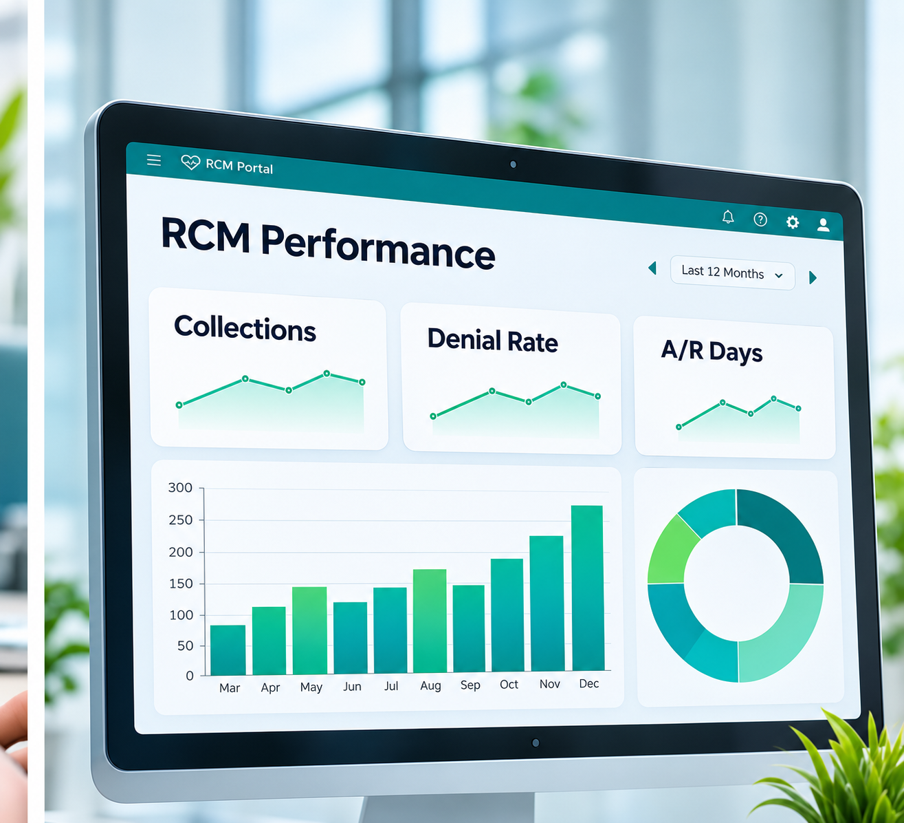

Revenue Analytics & Reporting
Unify revenue-cycle signals into practical operational reporting for practice leaders and billing teams.
You cannot improve what you cannot see.
Numbers are only useful if someone explains them. A report that says denials went up is less helpful than one that says why, and what to do.
We keep a small set of measures front and center: clean claim rate, days in A/R, denial rate, net collections and charge lag. We add provider, location and payer views where they help.
Then we sit down with you regularly to talk about what changed and what to try next.
A good fit if…
- You receive reports late or not at all
- Leaders want one view across locations
- You want to know which payers are slowest
- You need clear data for planning meetings
What slows this part of the revenue cycle down.
Flip each card to see how our team handles it.
Reports arrive late
Tap to see how we fix itBy the time numbers arrive, the month is over.
Core RCM dashboard
Too many metrics
Tap to see how we fix itDashboards bury the few numbers that matter.
Payer performance
No comparison
Tap to see how we fix itLocations, providers and payers are not comparable side by side.
Provider and location views
Insight without action
Tap to see how we fix itReports describe problems but do not suggest next steps.
Denial and A/R analysis
Everything this service covers.
Run by trained specialists, with AI helpers preparing and flagging the work.
Core RCM dashboard
Clean claim rate, days in A/R, denial rate, net collections and charge lag.
Payer performance
Payment speed, denial patterns and underpayments by payer.
Provider and location views
Compare providers and locations on consistent measures.
Denial and A/R analysis
Causes, aging and value at risk.
Scheduled reports
PDF summaries sent on your schedule or on request.
Review conversations
Regular reviews with your specialist to agree next steps.
A clear, five-step workflow.
Defined owners and transparent checkpoints at every stage, visible in your portal.
You share
- Permitted operational data from your systems
- The questions leadership asks most
- Location or provider groupings
- Secure access under a signed BAA
Connect data
Claims, payments and A/R data are brought into one view.
Define measures
Agree the few numbers that matter to you.
Publish
Dashboards and reports are shared in your portal.
Review
Meet regularly to discuss trends and actions.
Improve
Actions feed back into the other services.
You receive
- A portal with claims, A/R and denials in one view
- Scheduled and on-request PDF reports
- Trends and outliers highlighted
- A periodic review with your specialist
The language of this service.
The codes, forms and payer terms our specialists work with every day. We report on: collections trend, clean claim rate, denial reasons, a/r aging, location comparison.
Ask about rcm analytics any time.
Your client assistant answers from your data, sends the PDF when you need it, and brings in a specialist when a person needs to step in.
Sample conversation. Synthetic data only.
Which metrics do you report?
Typically clean claim rate, days in A/R, denial rate, net collection rate and charge lag, tailored to your goals.
Are reports available as PDF?
Yes. Scheduled or on request through your client assistant.
Can we compare locations or providers?
Yes, with consistent measures across sites and providers.
How often are reports updated?
Portal views reflect the latest processed data; scheduled reports follow the cadence you choose.
Can leadership get a summary?
Yes. A concise summary can be prepared for leadership meetings.
Do you sign a Business Associate Agreement?
Yes. A BAA is signed before any protected health information is shared.
Services that work alongside rcm analytics.

Ready for a revenue cycle you can actually see?
Book a short discovery call. We will learn how your billing runs today and show you what a more connected approach could look like.
Revenue Analytics & Reporting
Unify revenue-cycle signals into practical operational reporting for practice leaders and billing teams.
You cannot improve what you cannot see.
Numbers are only useful if someone explains them. A report that says denials went up is less helpful than one that says why, and what to do.
We keep a small set of measures front and center: clean claim rate, days in A/R, denial rate, net collections and charge lag. We add provider, location and payer views where they help.
A good fit if…
- You receive reports late or not at all
- Leaders want one view across locations
- You want to know which payers are slowest
- You need clear data for planning meetings
You receive
- A portal with claims, A/R and denials in one view
- Scheduled and on-request PDF reports
- Trends and outliers highlighted
- A periodic review with your specialist
Which metrics do you report?
Typically clean claim rate, days in A/R, denial rate, net collection rate and charge lag, tailored to your goals.
Are reports available as PDF?
Yes. Scheduled or on request through your client assistant.
Can we compare locations or providers?
Yes, with consistent measures across sites and providers.
How often are reports updated?
Portal views reflect the latest processed data; scheduled reports follow the cadence you choose.
Can leadership get a summary?
Yes. A concise summary can be prepared for leadership meetings.
Do you sign a Business Associate Agreement?
Yes. A BAA is signed before any protected health information is shared.
Related services
Ready to simplify your billing?
Book a short discovery call. No patient information needed.
Book a discovery callSample data only. No real patient information.